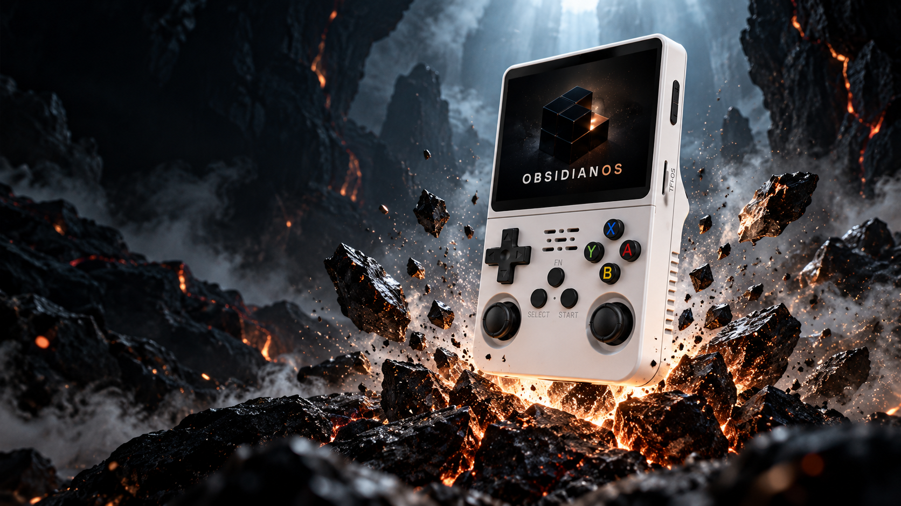
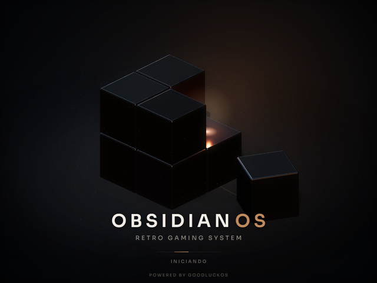

OBSIDIAN OS / UM NOVO COMEÇO
Liberte
seu console.
Seu portátil tem muito mais para oferecer. Jogos, livros, vídeos e a sua personalidade. Tudo em um só sistema.
Feito para o seu portátil.
Pensado para a sua próxima história.
ASSUMA O CONTROLE
Cada menu.
Uma nova possibilidade.
Entre nos menus, teste os controles e descubra como cada parte do Obsidian OS funciona.
A navegação acima demonstra a interface. Ela não executa jogos nem altera o seu aparelho.
A MESMA ESSÊNCIA. A SUA IDENTIDADE.
Seu mundo.
Do seu jeito.
As cores daqui são as cores do sistema. Escolha um tema e veja a página e o console mudarem juntos.

OBSIDIAN, DESDE O PRIMEIRO SEGUNDO
O começo de
uma nova fase.
O cubo de obsidiana marca a abertura do sistema. Uma identidade própria que acompanha você da inicialização à próxima partida.
OBSIDIAN INSTALLER
Um novo sistema.
Um caminho claro.
O instalador para Windows orienta a preparação do cartão. Confira a variante do aparelho e faça uma cópia dos seus arquivos antes de começar.
- 01
Confira seu aparelho
Compare o modelo e a variante com os perfis aprovados para a versão publicada.
- 02
Prepare o cartão
Escolha o destino com atenção. A gravação do sistema apaga o conteúdo do cartão selecionado.
- 03
Siga o instalador
Acompanhe a gravação e a verificação. Depois, inicie o console e organize sua biblioteca.
ANTES DO PRIMEIRO START
Vamos às dúvidas.
O que é esta demonstração?
Uma prévia interativa da interface para conhecer os menus. Os títulos e textos usados aqui são exemplos originais, e os controles afetam somente esta página.
O sistema já está disponível?
A versão pública está em preparação. O instalador oficial será disponibilizado nesta página com a versão, os perfis compatíveis e a verificação do arquivo.
O sistema inclui jogos ou livros?
Não. Você adiciona a sua própria coleção. Jogos, livros, vídeos e saves pessoais não fazem parte do download do sistema.
Ele serve para qualquer portátil parecido?
A aparência externa não determina a compatibilidade. O perfil precisa corresponder à placa e à tela do aparelho. Consulte os perfis publicados com a versão antes de instalar.
Quais formatos posso usar?
A leitura oferece EPUB sem DRM, CBZ e pastas de imagens. Vídeos dependem do contêiner e dos codecs; H.264 com AAC é a referência de teste do projeto. A compatibilidade de cada jogo depende do emulador e do aparelho.
PREPARE-SE PARA A PRÓXIMA FASE
O próximo start
é com Obsidian.
O instalador oficial chega aqui quando a versão pública estiver pronta.
Ir para downloadDisponibilidade e perfis compatíveis serão informados no lançamento.